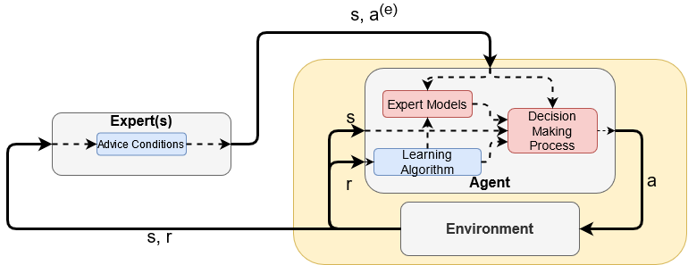
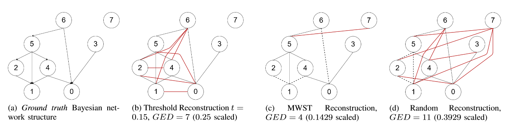

| Learning Who to Trust: Policy Learning in Single-Stage Decision Problems with Unreliable Expert Advice |
|---|
| Tamlin Love, Ritesh Ajoodha and Benjamin Rosman |
|  |
Work in the field of Assisted Reinforcement Learning (ARL) has shown that the incorporation of external information in problem solving can greatly increase the rate at which learners can converge to an optimal policy and aid in scaling algorithms to larger, more complex problems. However, these approaches rely on a single, reliable source of information; the problem of learning with information from multiple and/or unreliable sources of information is still an open question in ARL. We present CLUE (Cautiously Learning with Unreliable Experts), a framework for learning single-stage decision problems with policy advice from multiple, potentially unreliable experts.We compare CLUE against an unassisted agent and an agent that na¨ıvely follows advice, and our results show that CLUE exhibits faster convergence than an unassisted agent when advised by reliable experts, but is nevertheless robust against incorrect advice from unreliable experts. |
| 2021, Currently under peer review |
| Preprint · Preprint Supplementary Material · Code |
| Building Undirected Influence Ontologies Using Pairwise Similarity Functions |
|---|
| Tamlin Love and Ritesh Ajoodha |
|  |
The recovery of influence ontology structures is a useful tool within knowledge discovery, allowing for an easy and intuitive method of graphically representing the influences between concepts or variables within a system. The focus of this research is to develop a method by which undirected influence structures, here in the form of undirected Bayesian network skeletons, can be recovered from observations by means of some pairwise similarity function, either a statistical measure of correlation or some problem-specific measure. In this research, we present two algorithms to construct undirected influence structures from observations. The first makes use of a threshold value to filter out relations denoting weak influence, and the second constructs a maximum weighted spanning tree over the complete set of relations. In addition, we present a modification to the minimum graph edit distance (GED), which we refer to as the modified scaled GED, in order to evaluate the performance of these algorithms in reconstructing known structures. We perform a number of experiments in reconstructing known Bayesian network structures, including a real-world medical network. Our analysis shows that these algorithms outperform a random reconstruction (modified scaled GED ≈ 0.5), and can regularly achieve modified scaled GED scores better than 0.3 in sparse cases and 0.45 in dense cases. We argue that, while these methods cannot replace traditional Bayesian network structure-learning techniques, they are useful as computationally cheap data exploration tools and in knowledge discovery over structures which cannot be modelled as Bayesian networks. |
| 2020 International SAUPEC/RobMech/PRASA Conference |
| Paper |